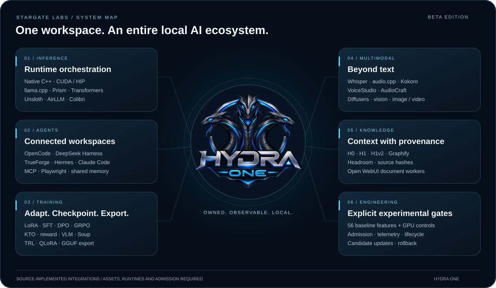

HYDRA One
Controller, memory budgets and native adapters keep execution under explicit control.

Our beta edition: HYDRA One integration, local models and a laboratory for observing and controlling the runtime.
Controller, memory budgets and native adapters keep execution under explicit control.
Chat, models, MCP, benchmarks and monitoring in our local interface.
56 inventoried features with explicit dependencies, provenance and admission gates.

Protocols, baselines, observed samples, model identity, warmup, TTFT and report comparison.
Discovery, authors, model cards, formats, shards, resources and compatible runtime selection.
Inventory, official sources, isolated candidates, verified backups, selection and rollback.
The concrete role of 21 integrated projects, with original marks, sources and attribution.
These checks cover the software listed in the report; they are not GPU benchmarks or qualification of every model. Experimental boundaries are documented.
Hydra One is based on Strata by Niko1221 and contributors, with our local modifications and HYDRA integration. Original copyright, licenses and contributions remain attributed.